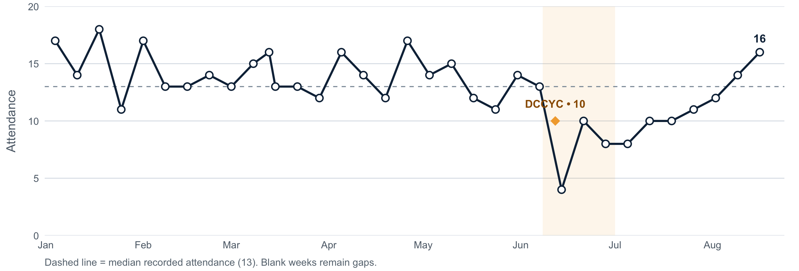
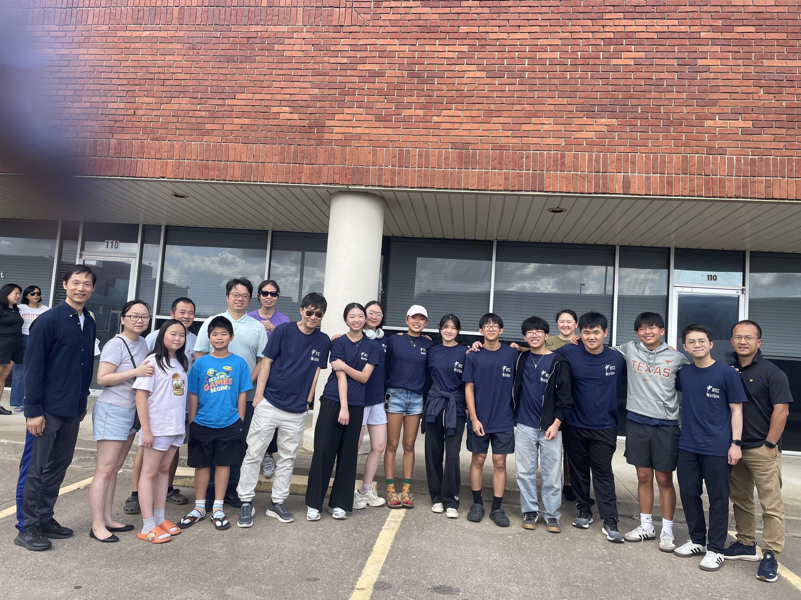

Confirm Friday event owners and the open-Friday fellowship rhythm.
NTCC Youth Ministry: Abide & Grow
State of the Youth Ministry + New Academic-Year Plan
NTCC Youth Ministry: Abide & Grow
“Abide in Me, and I in you.” — John 15:4 NKJV
August 21, 2026 • Plan year: Aug 28, 2026–Jul 31, 2027
A core is ready for intentional growth
Current state • as of August 21, 2026
11
Youth in grades 7–12
4
College
16
Latest recorded Sunday attendance • Aug 16
10
DCCYC participants • Jun 10–14
13
Median weekly attendance across recorded totals
Ministry opportunity: turn a stable core into an inviting community where students belong, worship, grow, and lead.
“Let no one despise your youth, but be an example…” — 1 Timothy 4:12
Attendance recovered in August after a disrupted summer
Weekly youth / NextGen attendance • Jan 4–Aug 16, 2026

Peak: 18
January 18
Summer signal
Family vacations, summer camps
August rebound
14 → 16 on Aug 9 and 16
“Abide” gave the first half one discipleship language
Study plan • January–June 2026
| Month | Monthly theme | Key Scripture | Ministry moment |
|---|---|---|---|
| Jan | Abide in Christ | John 15:4–5 | New Year kickoff • Jan 4 |
| Feb | Abide in the Word | John 8:31–32 | Feb 20–21 |
| Mar | Abide in Prayer | Philippians 4:6–7 | Sports Day outreach • Mar 13 |
| Apr | Abide in Community | Hebrews 10:24–25 | Easter / Baptism • Apr 5 |
| May | Abide Through Obedience | John 15:10 | |
| Jun | Abide in Trials | James 1:2–4 | DCCYC • Jun 10–14 |
The sequence moves from connection with Christ to practices that sustain faith: Scripture, prayer, community, obedience, and perseverance.
The fall turns abiding outward: fruit, love, courage, service, hope
Study plan • July–December 2026
| Month | Monthly theme | Key Scripture | Ministry moment |
|---|---|---|---|
| Jul | Abide in Grace | Romans 8:1 | Promotion Sunday • Jul 5 |
| Aug | Abide and Bear Fruit | John 15:8 | Back to School • Aug 9 |
| Sep | Abide in Love | John 13:34–35 | Relationship workshop • Sep 18 |
| Oct | Abide with Courage | Joshua 1:9 | Fall Festival outreach • Oct 30 |
| Nov | Abide in Humility & Service | Philippians 2:5–8 | Lock-in • Nov 20 |
| Dec | Abide in Hope | Proverbs 3:5–6 | Advent worship • Dec 13 |
Fall emphasis: make spiritual fruit visible through welcome, service, witness, and student leadership.
DCCYC connects our youth to other young Christians in other churches.
10
youth attended
DCCYC • Jun 10–14

“But we all, with unveiled face, beholding as in a mirror the glory of the Lord, are being transformed into the same image from glory to glory, just as by the Spirit of the Lord.” — II Corinthians 3:18 (NKJV)
The new year connects three rhythms around one mission
Academic year • Aug 28, 2026–Jul 31, 2027
01 • Connect
Friday Fellowship
A dependable front door for friendship, food, games, Scripture, small groups, and outreach.
Hebrews 10:24–25
02 • Worship
English Worship
A steady Sunday rhythm where youth and college students hear Scripture, sing together, and serve.
Colossians 3:16
03 • Grow
Disciple + Send
Personal invitations, consistent follow-up, leadership opportunities, and care for local and away students.
Matthew 28:19–20
Friday Fellowship
Friday Fellowship
Friday nights become the front door
- 8 Fall Fridays from Aug 28–Dec 18
- 6 outreach anchors, plus kickoff
- Open weeks for games, Bible discussion, prayer, and student-led nights
“Consider one another in order to stir up love and good works.” — Hebrews 10:24
Seven anchor nights create natural invitation moments
Aug 28
Kickoff Night
Sep 11
Movie + Pizza
Sep 25
Camp-out Night • Moon Festival
Oct 23
Cook-out Night
Oct 30
Fall Festival
Nov 20
Lock-in
Dec 4
Candlelight
Repeatable open-Friday rhythm
Welcome game → meal → worship → Scripture → small groups → prayer
Game bank: Human Bingo, team relay, Bible escape challenge, and student-vs-leader minute games.
Outreach discipline: every anchor night gets an invitation goal, a welcome team, and a follow-up owner.
English Worship
English Worship
One worshiping community, every Sunday
13 Sundays • Sep 13–Dec 6
7 speakers • guest and in-house voices
Students serving • welcome, music, Scripture, prayer, media
“Teaching and admonishing one another… singing with grace.” — Colossians 3:16 NKJV
A broad speaker bench supports a steady fall rhythm
Guest speakers
- Dr. Philip Koo
- Kevin Du
- Ryan Lin
- Denis Kam
- George Hue
In-house speakers
- Steven Chin
- Benson Lee
- Karl Ho
- Daniel Xiang
Confirmed in workbook: Sep 20 • Dr. Philip Koo. Assign the remaining dates and worship leaders before launch.
2026 Fall Sundays
September 13, 20, 27
October 4, 11, 18, 25
November 1, 8, 15, 22, 29
December 6
Contemporary + Classics worship anchors: Great is Thy Faithfulness • Battle Belongs • God Is in This Story • Hymn of Heaven • I surrender all • Just That Good
Growth means widening the circle without losing discipleship depth
Mission targets • by the end of the academic year
Youth • grades 7–12
11 → 20 gap: +9
55% of target today • growth needed: 82%
College
5 → 10 gap: +5
1 in town + 4 out of town • 50% of target today
“Grow up in all things into Him… from whom the whole body… causes growth.” — Ephesians 4:15–16
A simple pathway turns an invitation into belonging and leadership
01
Invite
Personal asks around high-interest outreach nights.
02
Welcome
Name, host, introduce, and include every new student.
03
Follow up
Contact student and parent within 48 hours.
04
Belong
Connect to a small group, worship team, or service role.
05
Lead
Coach students to welcome, testify, pray, teach, and serve.
Track monthly: first-time guests • 30-day returners • average attendance • students serving • college check-ins
“Go therefore and make disciples…” — Matthew 28:19
New team, New Sparks
Young Leaders, Exemplary Servants
NextGen Committee
- President: Brian Hsieh (outgoing)
- President: Jacob Liu (new term)
- Vice President (Treasurer and Development): Jacqueline Chou
- Vice President (Events and Outreach) Dorothy Pu
Mentor and teacher team
- Karl Ho
- Teacher: Steven Ching
- Worship and Gamemaster: Daniel Xiang
It only takes a spark to get a fire going, And soon all those around can warm up to its glowing.
Worship team
- Daniel Xiang (percussions)
- Karl Ho (AV and guitar)
- Jacqueline Chou (keyboard/piano)
- Dorothy Pu (vocal)
The next step is alignment
Before the Aug 28 kickoff
01
02
Assign every English Worship speaker and worship leader for Sep 13–Dec 6.
03
Give each outreach night an invitation goal, welcome team, and follow-up owner.
04
Create one monthly college touchpoint that includes both local and away students.
05
Pray by name for the people behind the +9 youth and +5 college goals.
“I planted, Apollos watered, but God gave the growth.” — 1 Corinthians 3:6 NKJV

State of the Youth Ministry 2026